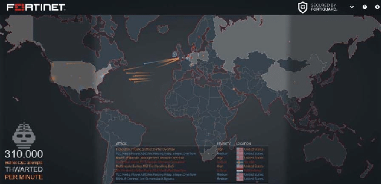
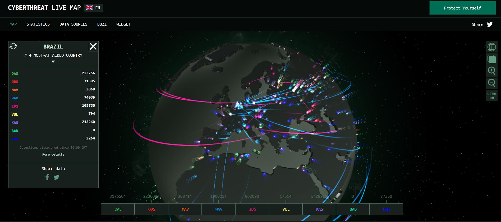
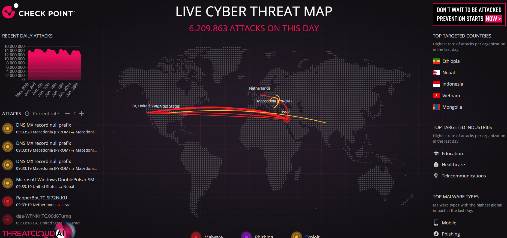
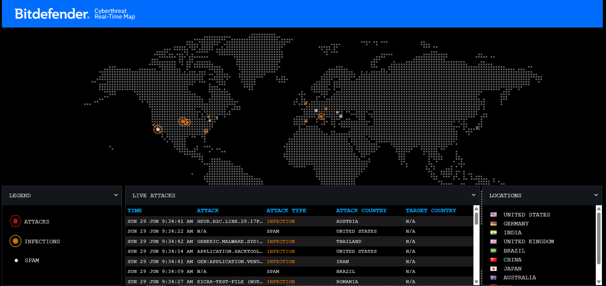
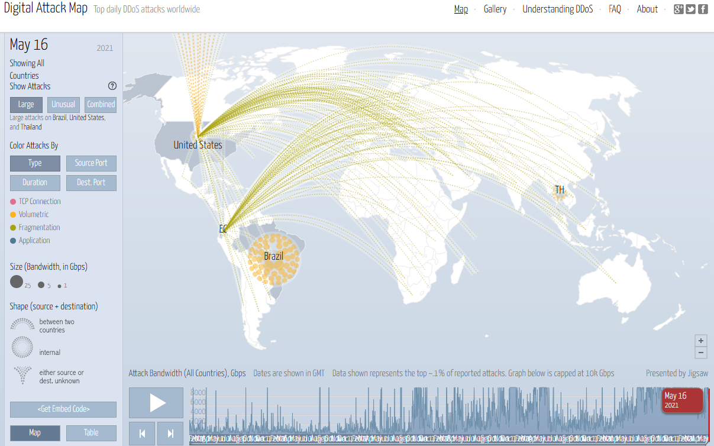
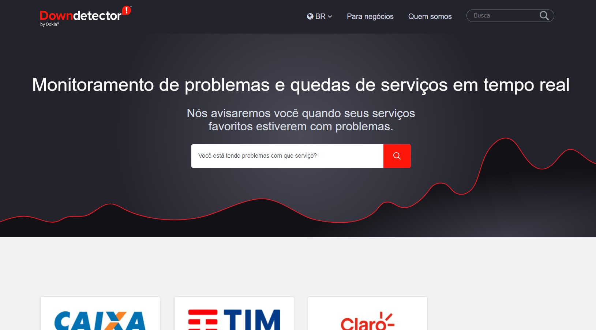
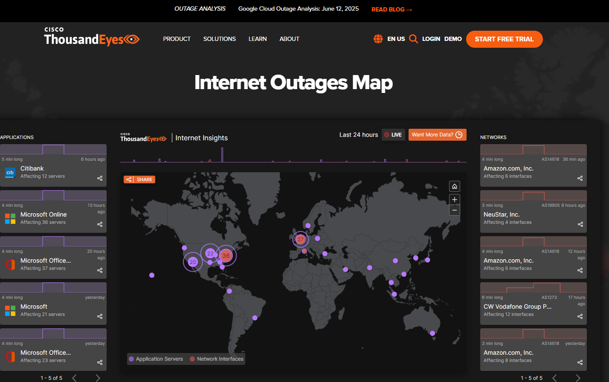
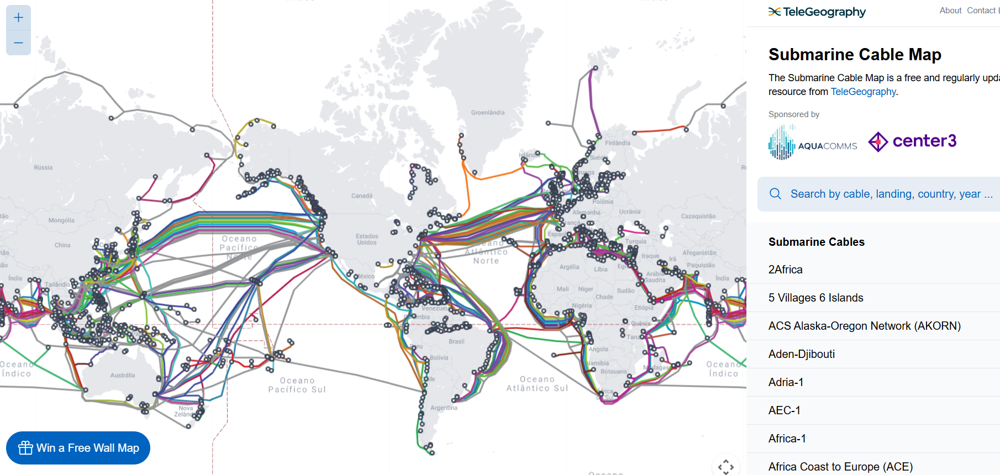

Mapas da Internet: Ataques e Uso em Tempo Real
Existem dois tipos principais de mapas que visualizam a atividade da internet: os que mostram ataques cibernéticos e os que monitoram o tráfego e a saúde da rede. Aqui está um resumo de cada um.
1. Mapas de Ataques Cibernéticos em Tempo Real
Esses mapas são visualizações, geralmente em um globo 3D, que mostram ataques cibernéticos acontecendo ao redor do mundo. Eles são alimentados por dados coletados de uma rede de sensores e "honeypots" (sistemas-isca).
Propósito Principal:
- Marketing e Conscientização: São ferramentas de Relações Públicas eficazes para empresas de cibersegurança, demonstrando a constante ameaça online.
- Visualização de Tendências: Podem indicar rapidamente se há um ataque em massa vindo de uma região específica ou mirando um tipo de serviço.
Um Ponto de Vista Crítico
É crucial entender que esses mapas NÃO mostram todos os ataques na internet. Eles exibem apenas os ataques que a rede de sensores daquela empresa específica detecta. São uma amostra, não o quadro completo.
Exemplos Populares:
-
Fortinet Threat Map
Um dos mais visualmente impressionantes. Mostra ataques por tipo com linhas coloridas cruzando o globo.
Visitar Mapa Exemplo da interface do Fortinet Threat Map -
Kaspersky Cyberthreat Real-time Map
Um clássico. Muito interativo, permite girar o globo e clicar em países para ver estatísticas.
Visitar Mapa Exemplo da interface do Kaspersky Cyberthreat Map -
Check Point Live Cyber Threat Map
Similar aos outros, mostra ataques, os principais países alvos e as principais fontes de ataque. Tenha paciência, pois a interface pode ser um pouco lenta.
Visitar Mapa Exemplo da interface do Check Point Live Cyber Threat Map -
Bitdefender Cyberthreat Real-time Map
Mostra infecções e ataques detectados pela rede da Bitdefender, com foco em malware e spam.
Visitar Mapa Exemplo da interface do Bitdefender Cyberthreat Map -
Anti-DDoS Attack Protection with the ELK Stack
Mostra a proteção contra ataques DDoS em tempo real usando a pilha ELK (Elasticsearch, Logstash, Kibana).
Visitar Mapa Exemplo da interface do Anti-DDoS com a pilha ELK
2. Mapas de Uso e Saúde da Internet em Tempo Real
Esses mapas não focam em ataques, mas sim na saúde, no tráfego e na infraestrutura da internet. São mais técnicos e úteis para entender como a internet funciona e onde podem estar ocorrendo problemas.
Propósito Principal:
- Monitoramento de Outages: Identificar quando um serviço popular ou um provedor de internet está com problemas.
- Visualização da Infraestrutura: Entender a conectividade física da internet, como cabos submarinos.
- Análise de Performance: Medir latência e perda de pacotes entre diferentes pontos do globo.
Exemplos Populares:
-
Downdetector
O mais famoso para o público geral. Mostra em tempo real quais serviços estão com problemas, com base em relatórios de usuários.
Visitar Mapa Exemplo da interface do Downdetector -
ThousandEyes Internet Outages Map
Uma ferramenta profissional da Cisco que mostra interrupções significativas na rede global (provedores, nuvem, etc.).
Visitar Mapa Exemplo da interface do ThousandEyes Internet Outages Map -
Submarine Cable Map
Fascinante, mostra a localização de todos os cabos de fibra óptica submarinos que formam a espinha dorsal da internet.
Visitar Mapa Exemplo da interface do Submarine Cable Map -
Akamai Internet Observatory
Dados de uma das maiores CDNs do mundo, mostrando volume de tráfego, tendências de ataque e a saúde geral da internet.
Visitar Mapa
Exemplo da interface do Akamai Internet Observatory